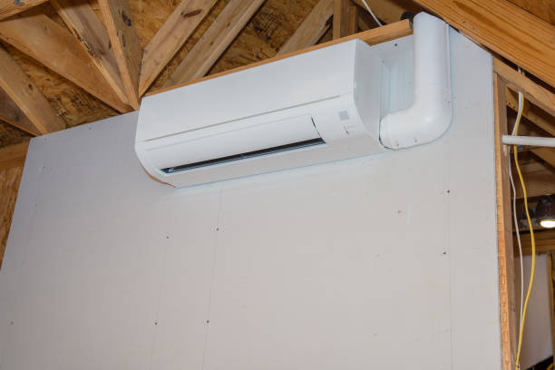

Professional Ductless Mini Split Services in Kendallville, IN
Elite HVAC Solutions is proud to serve Kendallville, Indiana, with professional ductless mini split installation, repair, and maintenance services. Our certified technicians provide 24/7 emergency service throughout the 46755 area, ensuring your home or business maintains optimal comfort year-round with the most advanced and efficient heating and cooling technology available.
As the leading ductless mini split specialists serving Kendallville and the greater Fort Wayne area, we understand the unique climate challenges of northeastern Indiana. Our expert team has extensive experience with all major ductless mini split brands including Mitsubishi Electric, Daikin, Fujitsu, LG, and Carrier, providing comprehensive solutions that deliver exceptional comfort, energy savings, and reliable performance.
Comprehensive Ductless Mini Split Services in Kendallville
Our ductless mini split services in Kendallville include professional installation, emergency repair, and preventive maintenance for residential and commercial properties. We also provide complete HVAC installation, HVAC repair, air conditioning services, heating services, and indoor air quality solutions.
Professional installation services begin with comprehensive assessment of your Kendallville property to determine the optimal system configuration. Our certified technicians perform detailed load calculations, evaluate electrical requirements, and design installations that maximize efficiency while maintaining aesthetic appeal. Every installation includes proper permits, code compliance verification, and comprehensive testing to ensure optimal performance.
Emergency repair services are available 24/7 throughout Kendallville for urgent ductless mini split problems. Our emergency technicians carry extensive diagnostic equipment and common replacement parts, enabling immediate resolution of most emergency situations. We prioritize safety while working efficiently to restore your comfort quickly and reliably.
Preventive maintenance programs help Kendallville customers avoid costly breakdowns while maximizing system efficiency and equipment life. Our maintenance services include thorough system inspection, professional cleaning, performance optimization, and detailed reporting to help you understand your system's condition and maintenance needs.
ðŸ Complete Services in Kendallville, IN
- Professional Installation: Expert ductless mini split installation
- 24/7 Emergency Repairs: Rapid response for urgent issues
- Preventive Maintenance: Comprehensive system care programs
- Energy Efficiency Optimization: Maximum savings and performance
- Indoor Air Quality Solutions: Advanced filtration and purification
- Commercial HVAC Services: Business and industrial solutions
Why Choose Ductless Mini Splits for Your Kendallville Property?
Ductless mini split systems offer numerous advantages for Kendallville homeowners and business owners. These advanced systems provide superior energy efficiency, precise temperature control, improved indoor air quality, and quiet operation that makes them ideal for Indiana's varied climate conditions.
Energy efficiency benefits are substantial, with modern ductless mini splits achieving SEER ratings of 20 or higher compared to traditional central air systems that typically rate between 13-16 SEER. This superior efficiency translates to significant utility bill savings, with many Kendallville customers reporting 30-40% reductions in heating and cooling costs.
Zone-based comfort control allows independent temperature management for different areas of your property, eliminating hot and cold spots while reducing energy waste. This feature is particularly valuable for larger homes or commercial spaces with varying occupancy patterns and comfort requirements.
Installation flexibility makes ductless mini splits ideal for Kendallville properties where traditional ductwork installation would be difficult or expensive. These systems require only small connections between indoor and outdoor units, making them perfect for home additions, renovations, or properties without existing ductwork.

Advanced Technology and Smart Features
Modern ductless mini split systems offer advanced technology features that enhance comfort, efficiency, and convenience for Kendallville residents. These innovations include smart home integration, Wi-Fi connectivity, advanced filtration systems, and intelligent operation modes that optimize performance automatically.
Smart thermostat integration provides remote control capabilities, programmable schedules, and energy usage monitoring through smartphone apps. These features allow Kendallville customers to monitor and control their systems from anywhere, ensuring optimal comfort while minimizing energy consumption.
Advanced filtration systems remove dust, pollen, bacteria, and other airborne contaminants, providing cleaner, healthier indoor air for your family or employees. Many systems include multi-stage filtration with HEPA filters, ionizers, and UV sterilization that significantly improve indoor air quality.
Quiet operation makes ductless mini splits ideal for bedrooms, offices, and other noise-sensitive areas. Indoor units typically operate at sound levels below 30 decibels, quieter than most refrigerators, ensuring comfort without noise disruption.
Professional Installation Excellence in Kendallville
Professional installation is crucial for ductless mini split performance, efficiency, and longevity. Our certified technicians follow rigorous installation procedures that ensure optimal system operation while maintaining manufacturer warranty coverage and local code compliance.
The installation process begins with comprehensive site assessment including load calculations, electrical evaluation, and optimal placement planning. We consider factors such as room layout, sun exposure, structural requirements, and aesthetic preferences to design installations that maximize performance while maintaining visual appeal.
Professional mounting and connection procedures ensure secure, leak-free installations that provide years of reliable operation. We use specialized tools and high-quality materials for refrigerant line installation, electrical connections, and drainage systems that meet manufacturer specifications and local codes.
System commissioning includes comprehensive testing, refrigerant charging, and performance verification to ensure optimal operation from day one. We provide detailed operation training and maintenance guidance to help you maximize your ductless mini split investment.
â Kendallville Customer Reviews â
"Elite HVAC Solutions provided excellent ductless mini split installation in our Kendallville home. Professional service and great results!" - Michelle K., Kendallville
"Fast emergency repair service when our system failed. These technicians know what they're doing and care about customer satisfaction!" - Brian L., Kendallville
Energy Efficiency and Cost Savings for Kendallville Residents
Ductless mini split systems deliver exceptional energy efficiency that translates to substantial cost savings for Kendallville homeowners and businesses. These systems use advanced inverter technology that modulates compressor speed to match heating and cooling demands, maintaining consistent temperatures while minimizing energy consumption.
Variable-speed operation eliminates the energy waste associated with traditional on/off cycling, allowing ductless mini splits to operate efficiently under varying load conditions. This intelligent operation results in significant utility bill reductions while providing superior comfort compared to conventional HVAC systems.
The absence of ductwork eliminates energy losses that typically account for 20-30% of heating and cooling costs in traditional ducted systems. By delivering conditioned air directly to living spaces, ductless mini splits capture this lost efficiency, providing superior comfort while using less energy.
Many utility companies and government agencies offer rebates and incentives for high-efficiency ductless mini split installations. Our team helps Kendallville customers navigate these programs to maximize savings and reduce the net cost of system installation.
Our Service Area in Kendallville, IN
24/7 Emergency Service in Kendallville
HVAC emergencies don't wait for convenient times, which is why Elite HVAC Solutions provides 24/7 emergency service throughout Kendallville and the surrounding areas. Our emergency response team is equipped with advanced diagnostic tools and common replacement parts to resolve urgent situations quickly and effectively.
Emergency situations requiring immediate attention include complete system failures during extreme weather, refrigerant leaks, electrical problems, and safety concerns. Our emergency technicians prioritize safety while working efficiently to restore your comfort and system operation.
Rapid response times ensure Kendallville customers receive prompt attention when HVAC emergencies occur. Our service vehicles are strategically located throughout the region to minimize response times and restore comfort as quickly as possible.
When immediate repairs aren't possible due to parts availability or complex issues, we can often provide temporary solutions to maintain basic comfort until permanent repairs can be completed. Our goal is to keep your family or business comfortable while ensuring quality repairs that provide lasting solutions.
Indoor Air Quality Solutions for Kendallville
Beyond temperature control, ductless mini split systems offer significant indoor air quality benefits for Kendallville properties. Advanced filtration systems continuously clean the air, removing dust, pollen, pet dander, and other airborne contaminants that can trigger allergies and respiratory issues.
Multi-stage filtration systems may include HEPA filters, activated carbon filters, ionizers, and UV sterilization technology that eliminates bacteria, viruses, and odors. These advanced systems provide cleaner, healthier indoor air for your family or employees.
The absence of ductwork eliminates many common indoor air quality problems associated with traditional HVAC systems. Ductwork can harbor dust, mold, and other contaminants that circulate throughout the property with each heating and cooling cycle. Ductless systems avoid this issue entirely, providing cleaner air delivery.
We also offer additional indoor air quality solutions including whole-house air purifiers, humidifiers, dehumidifiers, and duct cleaning services for properties with existing ductwork. These solutions work together to create the healthiest possible indoor environment.
Commercial Ductless Mini Split Solutions in Kendallville
Elite HVAC Solutions provides comprehensive commercial HVAC services for Kendallville businesses, including specialized ductless mini split solutions designed for commercial applications. These systems offer businesses precise climate control, reduced operating costs, and improved comfort for employees and customers.
Commercial ductless mini split installations require specialized expertise in larger systems, multiple zone coordination, and business operation considerations. Our commercial technicians understand the unique requirements of business applications and design solutions that minimize operational disruption.
Flexible installation scheduling accommodates business hours and operational requirements, often working during off-hours or low-activity periods to minimize disruption. We coordinate with business owners to ensure installations proceed smoothly without interfering with daily operations.
Energy efficiency benefits are particularly valuable for commercial applications where heating and cooling costs represent significant operational expenses. Many Kendallville businesses report substantial cost savings after switching to high-efficiency ductless mini split systems.
Financing and Rebate Programs
Elite HVAC Solutions offers flexible financing options to make ductless mini split installation accessible for all Kendallville families and businesses. Our financing programs feature competitive interest rates and flexible payment terms designed to fit various budgets and financial situations.
We stay informed about available utility rebates and government incentives for high-efficiency HVAC systems and help customers navigate application processes to maximize savings. These programs can significantly reduce the net cost of ductless mini split installation, making them an even more attractive investment.
Our team provides detailed cost-benefit analyses showing projected energy savings and return on investment for different system options. This information helps Kendallville customers make informed decisions about their HVAC investments and understand the long-term financial benefits of high-efficiency installations.
Contact Elite HVAC Solutions for Kendallville Service
Experience the comfort, efficiency, and reliability of professional ductless mini split services from Kendallville's most trusted HVAC contractor. Our certified technicians are ready to provide comprehensive assessments, expert installations, reliable repairs, and professional maintenance services that exceed your expectations.
We serve all of Kendallville and the surrounding 46755 area with prompt, professional service and competitive pricing. Our commitment to customer satisfaction and service excellence has made us the preferred choice for ductless mini split services throughout northeastern Indiana.
Call Elite HVAC Solutions today at 855-772-1650 to schedule your free consultation and discover why professional ductless mini split services make all the difference in comfort, efficiency, and satisfaction for your Kendallville property.
Get Your Free Estimate in Kendallville
Ready for Ductless Mini Splits?
Professional ductless mini split services in Kendallville, IN.
✓ Free in-home consultations
✓ Expert installation and service
✓ 24/7 emergency availability
✓ Comprehensive warranties